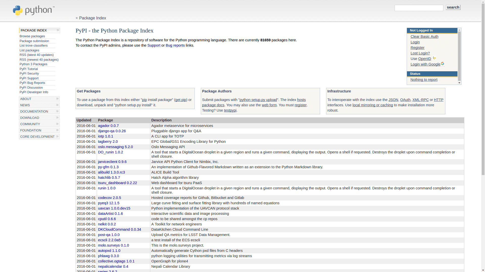

Imagine a seguinte situação: você passou alguns dias (ou mesmo meses) desenvolvendo uma módulo python, escreveu testes, implementou funcionalidades e depois de alguns ajustes, chegou a hora de liberar seu software para que outros desenvolvedores possam utilizá-lo. Qual o melhor modo de distribuí-lo?

Caro leitor, se você costuma programar em Python (seja profissionalmente ou não) provavelmente já instalou outros módulos usando o PyPI, através do comando abaixo:
pip install nomedomodulo
Não seria interessante usar o mesmo método para distribuir a sua aplicação? Sim? Então mãos a obra.
Sobre o PyPI - Python Package Index
O site PyPI, é um repositório de softwares desenvolvidos na linguagem Python. Em outras palavras, ele garante que seu pacote Python sempre esteja disponível para a instalação. O seu funcionamente é simples, porém algumas configurações inicias devem ser feitas para que tudo funcione corretamente.
Crie uma conta
Primeiramente, para distribuir seus pacotes usando o PyPI, precisamos criar uma conta em ambos os sites:
Recomendo que você utilize o mesmo email e senha para ambos os sites. Posteriormente, isso tornará mais fácil o processo de configuração.
Configurando o ambiente
O próximo passo é criar um arquivo .pypirc em sua home. Esse arquivo contem informações de auteticação, tanto para o PyPI Live quando para o PyPI Test.
touch ~/.pypirc
Apesar de não ser obrigatório a criação desse aquivo, ele facilita muito nosso trabalho, uma vez que você não precisaremos inserir nosso email e senha toda vez que formos enviar nosso código para o PyPI Live.
Abra o arquivo .pypirc em seu editor de texto favorito, e insira as informações abaixo.
[distutils]
index-servers =
pypi
pypitest
[pypi]
repository=https://pypi.python.org/pypi
username=seu_nomedeusuario
password=sua_senha
[pypitest]
repository=https://testpypi.python.org/pypi
username=seu_nomedeusuario
password=sua_senha
Em username insira seu nome de usuário e password, insira sua senha. Faça isso tanto para o pypi quanto para o pypitest.
Um observação importante é que, caso a sua senha possua espaço, não a coloque entre aspas. Por exemplo, se a sua senha for "batuque da viola doida", coloque exatamente o mesmo texto em password.
password=batuque da viola doida
Preparando o seu módulo Python
Todo pacote distribuído pelo PyPI precisa ter uma arquivo setup.py em seu diretório raiz. E se seu projeto também usa um arquivo readme em markdown (normalmente chamado README.md) você também precisará criar um arquivo chamado setup.cfgno diretório raiz do módulo.
Como exemplo, iremos utilizar o módulo codigo_avulso_test_tutorial que criei para ser utilizado como exemplo em nossos tutoriais. Assim, temos a seguinte estrutura básica de diretórios:
.
├── codigo_avulso_test_tutorial
│ ├── circulo.py
│ ├── figura_geometrica.py
│ ├── __init__.py
│ └── quadrado.py
├── LICENSE
├── README.md
├── setup.cfg
├── setup.py
└── test
├── circulo_test.py
├── figura_geometrica_test.py
├── __init__.py
└── quadrado_test.py
Aqui, o que nos interessa são os arquivos setup.py e setup.cfg. Dentro do arquivo setup.py temos várias informações sobre nossa aplicação que serão usadas pelo PyPI.
# -*- coding: utf-8 -*-
from setuptools import setup
setup(
name='codigo-avulso-test-tutorial',
version='0.1.1',
url='https://github.com/mstuttgart/codigo-avulso-test-tutorial',
license='MIT License',
author='Michell Stuttgart',
author_email='michellstut@gmail.com',
keywords='tutorial test unittest codigoavulso',
description=u'Tutorial de teste unitário em Python para o blog Código Avulso',
packages=['codigo_avulso_test_tutorial'],
install_requires=[],
)
O nome de cada tag é autoexplicativo, então não vou entrar em detalhes. Basta você usar o código acima e substituir com os dados do seu pacote.
O próximo passo é adicionar o seguinte conteúdo no arquivo setup.cfg (caso você o tenha criado).
[metadata]
description-file = README.md
Esse arquivo irá dizer ao PyPI onde seu arquivo readme está.
Publicando sua aplicação Python
Agora iremos estudar os passos para enviar nossa aplicação para PyPI, para que ela fique disponível para ser instalada através do pip.
Enviando para PyPI Test
Primeiramente, vamos registrar nossa aplicação no PyPI Test. Esse passo serve para verificarmos se está tudo certo com nosso pacote e também validar se já não existe outro módulo com o mesmo nome. Registramos nossa aplicação com o seguinte comando:
python setup.py register -r pypitest
Se tudo ocorrer bem teremos a seguinte saída (Server responde 200):
running register
running egg_info
creating codigo_avulso_test_tutorial.egg-info
writing codigo_avulso_test_tutorial.egg-info/PKG-INFO
writing top-level names to codigo_avulso_test_tutorial.egg-info/top_level.txt
writing dependency_links to codigo_avulso_test_tutorial.egg-info/dependency_links.txt
writing manifest file 'codigo_avulso_test_tutorial.egg-info/SOURCES.txt'
reading manifest file 'codigo_avulso_test_tutorial.egg-info/SOURCES.txt'
writing manifest file 'codigo_avulso_test_tutorial.egg-info/SOURCES.txt'
running check
Registering codigo-avulso-test-tutorial to https://testpypi.python.org/pypi
Server response (200): OK
Caso exista outro pacote com o mesmo nome, teríamos de escolher outro nome para o nosso pacote. Agora com nosso pacote devidamente registrado, executamos o comando abaixo para que o pacote seja enviado para o PyPI Test.
python setup.py sdist upload -r pypitest
Se tudo ocorrer bem (Server responde 200), você verá uma saída semelhante a esta e já poderá ver sua aplicação na lista do PyPI Test.
running sdist
running egg_info
writing codigo_avulso_test_tutorial.egg-info/PKG-INFO
writing top-level names to codigo_avulso_test_tutorial.egg-info/top_level.txt
writing dependency_links to codigo_avulso_test_tutorial.egg-info/dependency_links.txt
reading manifest file 'codigo_avulso_test_tutorial.egg-info/SOURCES.txt'
writing manifest file 'codigo_avulso_test_tutorial.egg-info/SOURCES.txt'
warning: sdist: standard file not found: should have one of README, README.rst, README.txt
.
.
.
creating dist
Creating tar archive
removing 'codigo-avulso-test-tutorial-0.1.1' (and everything under it)
running upload
Submitting dist/codigo-avulso-test-tutorial-0.1.1.tar.gz to https://testpypi.python.org/pypi
Server response (200): OK
Enviando para PyPI Live
Agora é pra valer. Executamos o mesmo passos para o PyPI Test.
python setup.py register -r pypi
Tudo ocorrendo bem, enviamos nosso pacote:
python setup.py sdist upload -r pypi
Parabéns! Com esse ultimo passo, publicamos o nosso pacote Python com sucesso! Agora ele pode ser visualizado na lista de aplicações do PyPI e ser instalado usando pip.
pip install nomedopacote
Ou, para o nosso exemplo:
pip install codigo_avulso_test_tutorial
Conclusão
É isso pessoal. Neste tutorial vimos como distribuir nossa aplicação Python, desde a crição na conta no PyPI até o registro e upload da nossa aplicação. Espero que tenham gostado e caso tenham alguma dúvida, deixem um comentário.
Obrigado pela leitura e até o próximo tutorial.